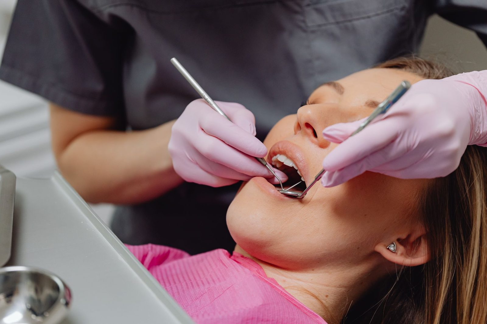

Periodontal Treatment in Cronulla
Periodontal Treatment in Cronulla
Diagnosed with gum disease? Here is what treatment involves, appointment by appointment.
If you have been diagnosed with periodontitis, this page sets out what treatment involves, appointment by appointment.
Periodontal treatment is not a single procedure. It is a sequence, and the sequence matters, because each stage determines what the next one needs to be.

Opening 16 November 2026. Register your interest for priority booking.
Open until 7pm Mondays. Early appointments from 7am Fridays. Nervous patients are always welcome. We take time to explain your options clearly.
Periodontal Treatment in Cronulla: in detail
Stage one: non-surgical periodontal therapy
Also called root surface debridement, or deep cleaning.
A routine hygiene appointment cleans the tooth surfaces you can see and just below the gum margin. Periodontal therapy goes further, cleaning the root surfaces inside the pockets that have formed, where the bacteria driving the disease are living.
How it is done.
Under local anaesthetic, so it is comfortable. Ultrasonic and hand instruments are used to remove deposits and disrupt the bacterial film on the root surfaces.
How long it takes.
Usually two to four appointments, working through the mouth in sections. Treating one quadrant at a time means the anaesthetic is localised and you are not numb across your whole mouth for an afternoon.
Afterwards.
Expect some tenderness for a few days and increased sensitivity to cold, which typically settles over a few weeks. You may notice gums appearing to recede slightly. This is not the treatment causing damage. It is swelling reducing, revealing where the gum line actually sits now that the inflammation has gone. Some patients notice small gaps opening between teeth for the same reason.
This stage resolves or substantially improves most cases.
Stage two: reassessment
Usually six to twelve weeks after the last treatment appointment.
We measure the same points as before and compare. Pockets that have reduced and stopped bleeding indicate the tissue has reattached and the disease is stable. Pockets that remain deep and continue to bleed indicate ongoing activity.
This appointment is the one patients most often skip, because by this point their mouth feels considerably better. Feeling better is not the same as being stable. The measurements are what tell us whether the treatment worked, and without them the next decision is guesswork.
Stage three: further treatment where needed
Where deep pockets persist despite thorough non-surgical treatment, options include repeating debridement in the specific areas still active, or referral to a periodontist for surgical treatment.
Surgical periodontal treatment allows direct access to root surfaces that cannot be reached through a pocket, reshaping of bone contours, and in selected cases regenerative procedures using grafting materials.
We will refer where referral genuinely serves you better, and we will explain why rather than simply handing over a name.
Adjunctive antibiotics are used in some circumstances, though they do not substitute for mechanical cleaning of the root surfaces and are not routinely required.
Stage four: maintenance, indefinitely
This is the stage that determines the long term outcome, and it is the one most likely to be neglected.
Periodontitis is a chronic condition. Treatment stabilises it. The bacteria recolonise the pockets over a matter of months, and without regular professional cleaning below the gum line the disease resumes.
Maintenance appointments are typically every three to four months, not six. That interval is based on how quickly bacterial populations re-establish in previously diseased pockets.
Each maintenance visit includes cleaning below the gum line, remeasurement of pocket depths, and review of any sites showing change. Intervals can be extended over time where readings remain consistently stable.
The research on this is consistent. Patients who attend maintenance retain their teeth at considerably higher rates than those who complete active treatment and then stop. If you take one thing from this page, take that.
What treatment can and cannot achieve
It can
stop or slow the progression of the disease, reduce pocket depths, eliminate inflammation and bleeding, and give you a stable situation you can maintain for many years.
It cannot
regrow bone that has already been lost, except in limited cases suitable for regenerative techniques. Teeth that have lost most of their support will not become firm again.
Outcomes depend heavily on factors beyond the treatment itself, particularly smoking, diabetes control, home care and maintenance attendance. Some patients respond better than others with identical treatment. We will give you a realistic picture of your own situation rather than a general one.
Cost and cover
Periodontal treatment involves several appointments and you will receive a written plan and estimate covering the whole sequence before we begin.
Health fund extras cover commonly contributes, though periodontal item numbers may draw on a different limit than routine cleans. We can provide the item numbers so you can check with your fund. Payment plans are available.
Booking
We are at 13 Cronulla Street, Cronulla, convenient for Woolooware, Burraneer, Greenhills Beach, Caringbah South, Taren Point, Kurnell and Bundeena.
Call (02) 8599 9815 or book online.
The rest of the gum health series
Doors open 16 November 2026. Register now and we will be in touch with your priority booking invitation.